Simscape 기초 — 부품을 이어 물리 모델을 만든다
- Simulink 블록 선도를 그리려면 먼저 미분방정식을 세워야 한다. 식을 세우지 않고 부품을 그대로 이을 수는 없을까?
- Simscape의 선은 Simulink의 선과 무엇이 다른가? 왜 화살표가 없나?
- Simscape 모델에 꼭 있어야 하는 블록 세 가지는 무엇이고, 각각 왜 필요한가?
- 부품을 이어 만든 모델의 응답은 손으로 구한 전달함수의 응답과 같은가?
- 센서가 내놓는 값의 단위는 어디서 정하나? rpm으로 바로 받을 수 있나?
9회에서는 블록 선도를 그렸다. 플랜트 자리에는 Transfer Fcn 블록을 놓고 분모 계수 [1 18 95 150]을 적었다.
그 계수는 어디서 왔을까? 누군가 시스템의 미분방정식을 세우고 라플라스 변환을 해서 얻은 것이다. 제어공학 4장에서 하던 그 일이다.
오늘은 그 단계를 건너뛰는 도구를 본다. Simscape는 질량 · 스프링 · 저항 · 모터 같은 부품 블록을 실제 연결 그대로 이으면 운동방정식을 스스로 세우고 푼다. 첫 예제로 4장의 기계 소자 셋(질량 · 댐퍼 · 스프링)을 이어 보고, 손으로 구한 전달함수와 같은 답이 나오는지 확인한다. 다음 11회에서는 같은 방법으로 DC 모터를 만든다.
한 장 요약
왼쪽은 오늘 쓰는 블록과 함수, 오른쪽은 그것이 모델링의 어느 자리인지다.
| 블록 · 함수 | 하는 일 | 모델링에서 쓰는 자리 |
|---|---|---|
ssc_new | Simscape용 빈 모델을 기본 블록과 함께 연다 | 시작 |
| Mass · Translational Spring · Translational Damper | 질량 \(M\) · 스프링 \(k\) · 댐퍼 \(b\) | 기계 소자 (4장) |
| Mechanical Translational Reference | 움직이지 않는 바닥(벽) | 기준점 |
| Ideal Force Source | 입력 신호만큼의 힘을 낸다 | 입력 \(F(t)\) |
| Ideal Translational Motion Sensor | 위치 · 속도를 잰다 | 출력 \(x(t)\) |
| Simulink-PS Converter · PS-Simulink Converter | Simulink 신호 ↔ 물리 신호, 단위를 붙이고 뗀다 | 두 세계의 경계 |
| Solver Configuration | 물리 네트워크의 계산 설정 | 모든 Simscape 모델에 하나 |
out.simlog · Simscape Results Explorer | 모든 부품의 힘 · 속도 · 위치 기록 | 모델 속 들여다보기 |
| Inertia · Rotational Damper · Ideal Torque Source · Ideal Rotational Motion Sensor | 회전 관성 \(J\) · 회전 댐퍼 \(D\) · 토크 입력 · 각속도 측정 | 회전 기계 (11회 모터) |
① Simscape는 무엇인가
부품을 잇기만 하면 된다면 왜 처음부터 그렇게 하지 않았을까? 식을 세우는 법을 먼저 알아야 결과가 맞는지 판단할 수 있기 때문이다. 오늘도 식을 먼저 세우고(②), 같은 시스템을 부품으로 만든 뒤(③~⑤), 둘이 같은 답을 내는지 맞춰 본다(⑥).
Simscape 모델과 Simulink 모델은 같은 편집기 안에 섞여 있지만 선의 뜻이 다르다.
| Simulink 신호선 | Simscape 물리 연결선 | |
|---|---|---|
| 모양 | 화살표가 있다 (검은 선) | 화살표가 없다 (분야마다 색이 다르다 — 기계 초록, 전기 파랑) |
| 뜻 | 값 하나가 한쪽에서 다른 쪽으로 전해진다 | 두 단자가 붙어 있다 — 같은 위치·같은 전압을 갖는다 |
| 예 | \(e = r - y\)를 Gain으로 보낸다 | 스프링 끝과 질량이 붙어 있다 |
| 나눠질 때 | 같은 값이 여러 곳에 복사된다 | 힘(전류)이 여러 갈래로 나뉘고, 갈래의 합은 0이다 |
마지막 줄이 핵심이다. 질량에 스프링 · 댐퍼 · 외력이 함께 붙어 있으면, Simscape는 그 접점에서 힘의 합이 0(뉴턴 법칙, 회로라면 키르히호프 전류 법칙)이 되도록 식을 세운다. 교재에서 자유물체도를 그리고 힘을 더하던 일을 접점마다 자동으로 하는 셈이다.
② 질량-스프링-댐퍼의 전달함수
오늘의 시스템은 벽에 스프링과 댐퍼로 매달린 질량이다. 질량을 오른쪽으로 일정한 힘 \(F\)로 민다. 질량은 어디까지 가고, 어떻게 흔들리다 멈출까?
질량에 걸리는 힘을 모두 더한다. 외력은 오른쪽, 스프링은 늘어난 만큼 왼쪽, 댐퍼는 속도만큼 왼쪽으로 당긴다.
$$M\ddot{x} = F - kx - b\dot{x}$$ $$M\ddot{x} + b\dot{x} + kx = F$$초기값을 0으로 두고 라플라스 변환하면
$$\frac{X(s)}{F(s)} = \frac{1}{Ms^2 + bs + k} = \frac{1}{s^2 + 2s + 10}$$% 질량-스프링-댐퍼의 전달함수 X(s)/F(s) = 1/(M s^2 + b s + k)
M = 1; b = 2; k = 10; % 질량 [kg], 댐핑 [N*s/m], 스프링 [N/m]
F0 = 1; % 가하는 힘 [N]
s = tf('s');
G = 1/(M*s^2 + b*s + k)
damp(G)
x_final = F0*dcgain(G)명령 창 출력
G =
1
--------------
s^2 + 2 s + 10
Continuous-time transfer function.
Model Properties
Pole Damping Frequency Time Constant
(rad/seconds) (seconds)
-1.00e+00 + 3.00e+00i 3.16e-01 3.16e+00 1.00e+00
-1.00e+00 - 3.00e+00i 3.16e-01 3.16e+00 1.00e+00
x_final =
0.1000출력을 읽는다. 극점은 \(-1 \pm j3\), 제동비 0.316, 고유주파수 3.16 rad/s — 제동비가 작으니 꽤 출렁인다. 최종 위치는 0.1 m다. 스프링이 \(kx = 10 \times 0.1 = 1\) N으로 미는 힘과 같아지는 자리에서 멈춘다.
📐 이론과 잇기 — 4장의 2차 시스템 공식에 대입
\(s^2 + 2\zeta\omega_n s + \omega_n^2\)과 맞추면 \(\omega_n = \sqrt{k/M} = \sqrt{10} = 3.162\), \(\zeta = \dfrac{b}{2\sqrt{kM}} = \dfrac{2}{2\sqrt{10}} = 0.316\).
최대초과 \(e^{-\zeta\pi/\sqrt{1-\zeta^2}} = e^{-0.316\pi/0.949} = e^{-1.047} = 0.351\) — 최대 위치는 \(0.1 \times 1.351 = 0.135\) m가 되어야 한다. ⑥에서 확인한다.
③ Simscape 모델 시작 — ssc_new
Simscape 모델은 빈 Simulink 모델에서 시작해도 되지만, 꼭 필요한 블록 몇 개를 매번 찾아 넣어야 한다.
명령 창에 ssc_new를 치면(또는 시작 화면의 Simscape › Blank Model) 그 블록들이 미리 놓인 모델이 열린다.

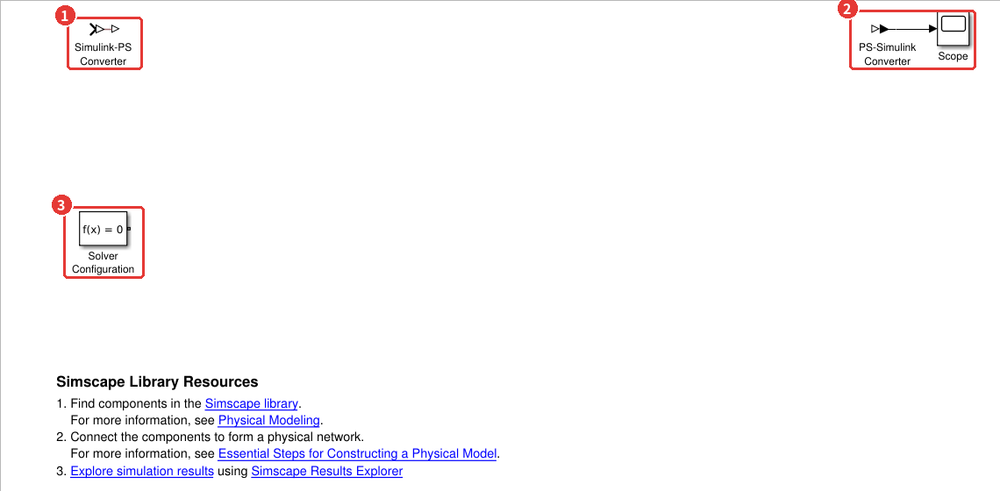
ssc_new로 연 모델. 이 블록들이 모든 Simscape 모델의 뼈대다.- 1Simulink-PS Converter — Simulink 신호(단위 없는 숫자)를 물리 신호(단위가 붙은 값)로 바꾼다. Simulink 쪽 입력이 물리 모델로 들어가는 입구다.
- 2PS-Simulink Converter → Scope — 물리 신호를 정한 단위의 숫자로 바꿔 Simulink로 내보낸다. 출구다.
- 3Solver Configuration(\(f(x)=0\)) — 물리 네트워크 하나에 하나씩 반드시 붙인다. 없으면 실행할 때 오류가 난다.
🆕 이 절에서 처음 나오는 것
- ssc_new
- Simscape용 새 모델을 연다. 변환기 두 개 · Scope · Solver Configuration이 놓여 있다. 여기서는 질량-스프링-댐퍼 모델의 출발점으로 썼다.
- 물리 신호 (Physical Signal)
- 단위를 함께 가진 신호. 변환기와 센서 · 소스의 신호 포트를 잇는 갈색 선이 물리 신호다. Simulink 신호(검은 선)와 바로 이을 수 없고 반드시 변환기를 거친다.
Simscape 라이브러리
부품 블록은 Library Browser의 Simscape › Foundation Library 아래에 분야별로 있다.
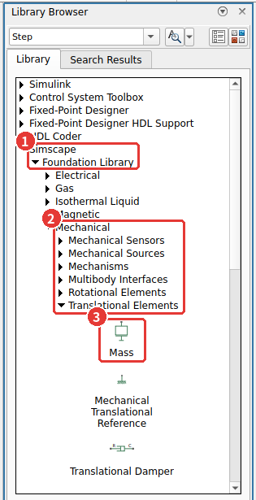
오늘 쓰는 블록과 위치다. 9회처럼 캔버스를 더블클릭해 이름으로 넣어도 된다.
| 블록 | Foundation Library 위치 | 4장의 소자 · 역할 |
|---|---|---|
| Mass | Mechanical › Translational Elements | 질량 \(M\) — 미분 요소 |
| Translational Spring | Mechanical › Translational Elements | 스프링 \(k\) — 적분 요소 |
| Translational Damper | Mechanical › Translational Elements | 댐퍼 \(b\) — 비례 요소 |
| Mechanical Translational Reference | Mechanical › Translational Elements | 움직이지 않는 벽 · 바닥 |
| Ideal Force Source | Mechanical › Mechanical Sources | 입력 힘 \(F\) |
| Ideal Translational Motion Sensor | Mechanical › Mechanical Sensors | 위치 \(x\) · 속도 \(\dot x\) 측정 |
| Solver Configuration · 두 변환기 | Simscape › Utilities | ③의 뼈대 |
④ 물리 연결 — 블록 잇기와 R · C 포트
부품은 어떻게 이을까? 그림의 연결을 그대로 옮긴다. 스프링 · 댐퍼 · 외력은 한쪽 끝이 질량에, 다른 쪽 끝이 벽에 붙어 있다. Simscape 블록의 단자도 같은 식이다. 기계 블록은 대부분 R과 C 두 단자를 가지고, 센서는 「R에 대한 C의 움직임」을 잰다. 그래서 이 자료에서는 늘 R을 기준(벽) 쪽, C를 움직이는 쪽에 단다.

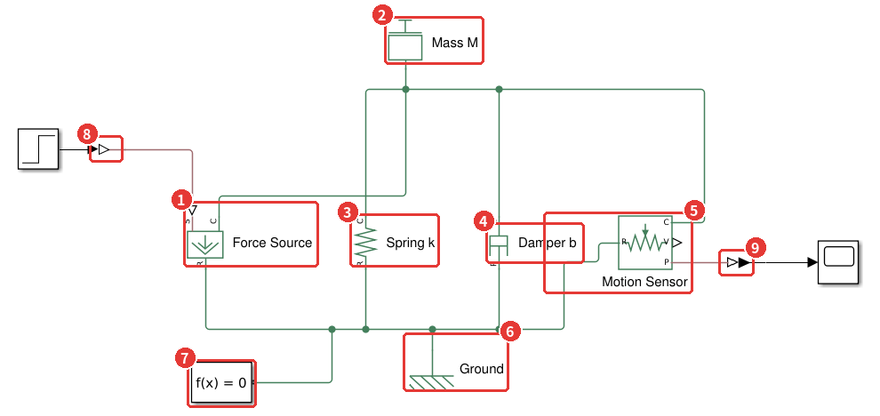
msd_simscape.slx. 위쪽 초록 선이 질량에 붙은 점, 아래쪽 초록 선이 벽이다.- 1Force Source — S 단자로 들어온 값만큼 C와 R 사이에 힘을 낸다. C를 질량에, R을 벽에.
- 2Mass M — 단자가 하나뿐이다. 질량은 늘 「가만히 있는 공간」에 대한 가속도로 힘을 받기 때문에 기준 단자가 따로 없다.
- 3Spring k — C를 질량에, R을 벽에. 두 단자의 위치 차이만큼 힘을 낸다.
- 4Damper b — 스프링과 나란히. 두 단자의 속도 차이만큼 힘을 낸다.
- 5Motion Sensor — C(재는 점)를 질량에, R(기준)을 벽에. 오른쪽 P 단자가 위치, V 단자가 속도다.
- 6Ground(Mechanical Translational Reference) — 벽. 아래 초록 선 전체가 이 블록에 붙어 「움직이지 않는 점」이 된다.
- 7Solver Configuration — 초록 네트워크 아무 곳에나 하나 붙인다.
- 8Simulink-PS Converter — Step(1 N)을 물리 신호로 바꿔 Force Source의 S로 보낸다.
- 9PS-Simulink Converter — 센서의 위치를 숫자로 바꿔 Scope로 보낸다.
선 긋는 법은 9회와 같다. 단자에서 단자로 끈다. 다만 화살표가 없으니 어느 쪽에서 시작해도 된다. 위쪽 초록 선에 네 블록의 C와 질량이 모두 붙어 있다는 것은 「네 부품의 그 끝이 질량과 함께 움직인다」는 뜻이다. Simscape는 이 접점에서 \(M\ddot x = F - kx - b\dot x\)를 스스로 세운다 — ②에서 손으로 세운 바로 그 식이다.
⚠️ R과 C를 바꿔 달면 부호가 뒤집힌다
Force Source의 C를 벽에, R을 질량에 달면 같은 1 N이 반대 방향으로 작용해 질량이 왼쪽으로 간다. 센서를 거꾸로 달면 위치가 음수로 나온다. 결과의 부호가 이상하면 먼저 R · C를 확인한다. 「R은 기준(벽) 쪽, C는 움직이는 쪽」으로 늘 맞춰 두면 헷갈릴 일이 줄어든다.
⑤ 블록 설정과 단위
Simscape 블록의 값에는 단위가 붙는다. 같은 숫자 1이라도 kg인지 g인지에 따라 다른 질량이다. 어디서 정할까? 블록을 더블클릭하면 값 칸 옆에 단위 칸이 있다.
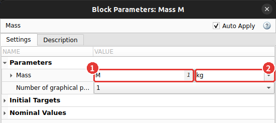
M을 적었다(작업공간의 값 1이 흐리게 보인다). 2 단위 — kg.스프링(k, N/m)과 댐퍼(b, N·s/m)도 같은 방법으로 적는다. 변환기에서는 경계를 넘을 때 붙이고 뗄 단위를 정한다.
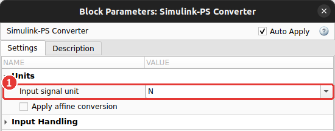
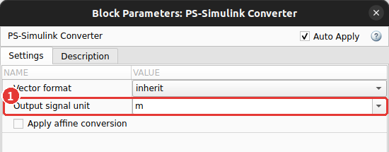
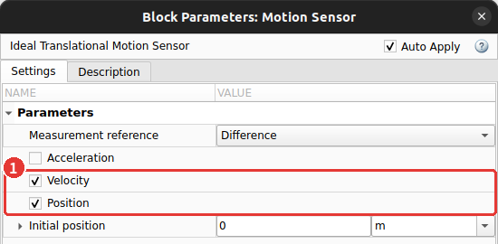
⚠️ 단위가 맞지 않으면 실행 전에 막힌다
Simulink-PS Converter를 m(길이)로 두고 Force Source(힘)에 이으면 「단위가 맞지 않는다」는 오류가 난다.
Simscape는 단위가 맞는지 실행 전에 검사한다. 반대로 N과 kN처럼 같은 종류끼리는 알아서 환산하므로,
변환기의 단위를 잘못 고르면 오류 없이 1000배 다른 답이 나올 수 있다. 결과의 크기가 이상하면 변환기의 단위부터 본다.
⑥ 실행하고 전달함수와 비교하기
부품으로 만든 모델은 정말 ②의 식과 같은 답을 낼까? 작업공간에 M k b F0가 있는 상태에서 Stop Time 6초로 Run을 누르고 Scope를 열면 출렁이며 0.1로 가는 곡선이 나온다.
그 결과를 코드로 꺼내 전달함수의 계단응답과 한 그래프에 겹친다.
% Simscape 모델을 돌리고, 같은 그림에 식(전달함수)으로 구한 응답을 겹친다
out = sim('msd_simscape');
x = out.simlog.Motion_Sensor.P.series; % 센서가 잰 위치 — 블록 이름의 빈칸은 _ 로
t_ssc = x.time; x_ssc = x.values('m');
[x_tf, t_tf] = step(F0*G, 6);
plot(t_ssc, x_ssc, 'LineWidth', 2.5); hold on
plot(t_tf, x_tf, 'k--', 'LineWidth', 1.2); hold off
grid on; legend('Simscape (부품을 이은 모델)', '전달함수 1/(Ms^2+bs+k)', 'Location', 'southeast')
xlabel('시간 (s)'); ylabel('x (m)'); title('같은 질량-스프링-댐퍼, 두 가지 방법')
fprintf('최대 위치 Simscape %.4f m, 전달함수 %.4f m\n', max(x_ssc), max(x_tf))
fprintf('최종 위치 Simscape %.4f m, 전달함수 %.4f m\n', x_ssc(end), x_tf(end))명령 창 출력
최대 위치 Simscape 0.1351 m, 전달함수 0.1350 m
최종 위치 Simscape 0.0999 m, 전달함수 0.0999 m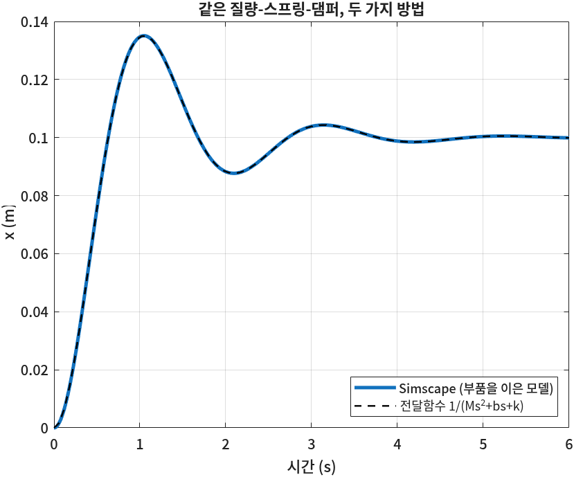
최대 위치 0.135 m, 최종 위치 0.1 m — ②의 📐에서 공식으로 구한 값과 같다. 식을 한 줄도 적지 않은 모델이 같은 답을 냈다.
🆕 이 코드에서 처음 나오는 것
- out.simlog.블록이름.변수.series
- Simscape 모델을 돌리면 모든 부품의 변수(힘 · 속도 · 위치 …)가
simlog에 기록된다. 블록 이름의 빈칸은_로 바뀐다(Motion Sensor→Motion_Sensor). 여기서는 센서의 위치P를 꺼냈다. - x.time · x.values('m')
- 기록된 값의 시간과 값.
values에 단위를 주면 그 단위로 바꿔서 돌려준다. 여기서는 m로 꺼냈다.'mm'를 주면 같은 값이 mm로 나온다.
Simscape Results Explorer · simlog
센서를 달지 않은 부품의 값도 볼 수 있을까? simlog에는 모든 부품이 들어 있다. 툴스트립의 Simscape Results Explorer(SIMULATION 탭 오른쪽 끝)를 누르면 그 내용을 트리로 보여 준다.

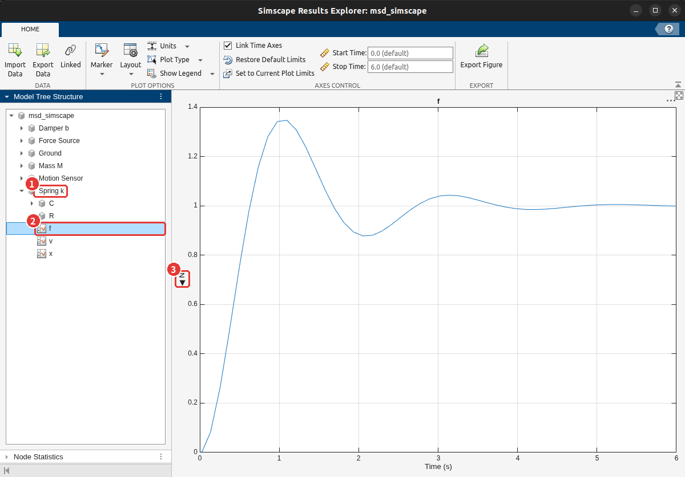
- 1모델 트리에서 부품(Spring k)을 펼친다.
- 2변수(f — 힘)를 누르면 오른쪽에 그래프가 뜬다. Ctrl을 누른 채 여러 개를 고르면 칸을 나눠 함께 그린다.
- 3세로축 단위 — 위쪽 Units 메뉴에서 바꿀 수 있다.
스프링의 힘은 1 N으로 간다. 멈춘 뒤에는 스프링이 외력 1 N을 혼자 다 받아 낸다는 뜻이다. 코드로도 같은 값을 꺼낼 수 있다.
% Results Explorer 에서 본 값을 코드로 — 스프링이 받는 힘 f 와 댐퍼가 받는 힘
f_spring = out.simlog.Spring_k.f.series.values('N');
f_damper = out.simlog.Damper_b.f.series.values('N');
fprintf('t = 6 s 스프링 %.3f N, 댐퍼 %.3f N\n', f_spring(end), f_damper(end))
fprintf('k * x_final = %.3f N\n', k*x_final)명령 창 출력
t = 6 s 스프링 0.999 N, 댐퍼 -0.001 N
k * x_final = 1.000 N6초에서 스프링 0.999 N, 댐퍼는 거의 0이다. 댐퍼 힘은 속도에 비례하니 질량이 멈추면 사라진다. 힘의 균형 \(F = kx + b\dot x\)에서 \(\dot x = 0\)이면 \(F = kx\)다.
⑦ 회전 운동 — 관성과 회전 댐퍼
직선 운동에서 한 일을 회전에서도 그대로 할 수 있을까? 4장의 회전 기계 소자표를 보면 질량 \(M\) → 관성 \(J\), 댐퍼 \(b\) → 회전 댐퍼 \(D\), 힘 \(F\) → 토크 \(T\), 위치 \(x\) → 각 \(\theta\)로 글자만 바뀐다. 11회의 모터는 축에 원판이 달린 회전 시스템이니 미리 한 번 만들어 둔다.
$$J\dot\omega + D\omega = T \quad\Rightarrow\quad \frac{\Omega(s)}{T(s)} = \frac{1}{Js + D}$$
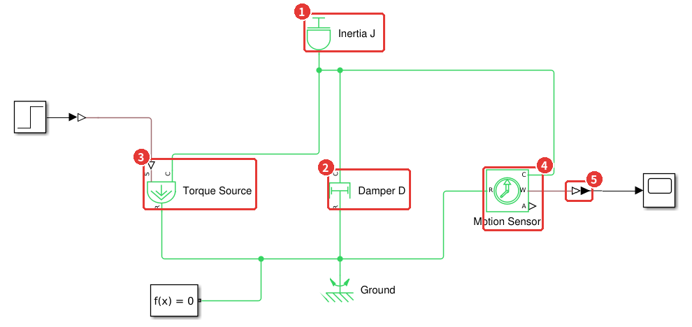
rot_simscape.slx — ④의 모델에서 블록을 회전용으로 바꿔 끼운 것이다. 스프링은 뺐다.- 1Inertia J (Mechanical › Rotational Elements) — \(J = 0.01\) kg·m².
- 2Damper D(Rotational Damper) — \(D = 0.02\) N·m/(rad/s).
- 3Torque Source(Ideal Torque Source, Mechanical Sources) — 0.1 N·m. 변환기의 단위는
N*m. - 4Motion Sensor(Ideal Rotational Motion Sensor) — W가 각속도, A가 각도다.
- 5PS-Simulink Converter — 출력 단위를 rpm으로 골랐다(아래 그림).
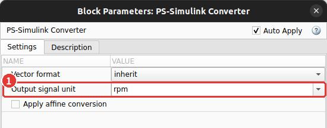
% 회전 관성 J 와 댐퍼 D 에 토크 T0 를 준다 — 식으로 구한 값과 Simscape 를 비교한다
J = 0.01; D = 0.02; T0 = 0.1; % [kg*m^2], [N*m/(rad/s)], [N*m]
w_final = T0/D % 최종 각속도 [rad/s]
rpm_final = w_final*60/(2*pi) % 같은 값을 rpm 으로
tau = J/D % 시정수 [s]
out = sim('rot_simscape');
w = out.simlog.Motion_Sensor.W.series;
plot(w.time, w.values('rpm'), 'LineWidth', 2); grid on
yline(rpm_final, 'k--', sprintf('%.1f rpm', rpm_final))
xline(tau, 'k:', '\tau = J/D')
xlabel('시간 (s)'); ylabel('회전속도 (rpm)'); title('토크 0.1 N·m 를 준 관성-댐퍼')명령 창 출력
w_final =
5
rpm_final =
47.7465
tau =
0.5000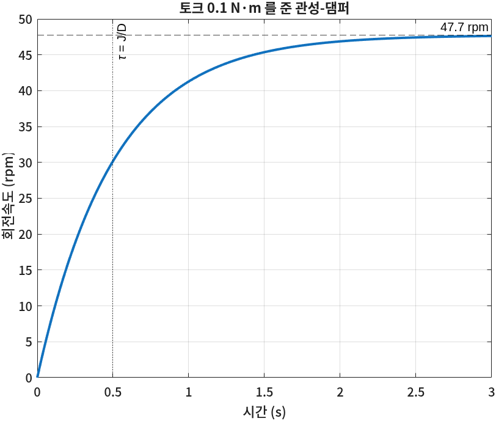
📐 이론과 잇기 — 1차 지연 요소
\(\dfrac{\Omega(s)}{T(s)} = \dfrac{1}{Js + D} = \dfrac{1/D}{(J/D)s + 1}\) — 4장의 1차 지연 요소 \(\dfrac{K}{\tau s + 1}\)이다. \(K = 1/D = 50\), \(\tau = J/D = 0.5\) s.
$$\omega(\infty) = \frac{T_0}{D} = \frac{0.1}{0.02} = 5 \text{ rad/s} = 5 \times \frac{60}{2\pi} = 47.7 \text{ rpm}$$관성 \(J\)는 얼마나 빨리 도달하는지(시정수)를, 마찰 \(D\)는 어디까지 가는지(최종값)를 정한다. 11회에서 원판의 질량을 바꿀 때 이 둘을 다시 본다.
🧪 실습
RC 회로를 Simscape로 만들고 시정수를 확인한다
이걸 해 보면 무엇을 알게 되나: 기계에서 한 일이 전기에서도 똑같이 된다는 것 — 부품 · 기준 · 센서 · 변환기의 구조가 분야와 상관없이 같다는 것을 손으로 확인한다.
준비물: MATLAB(Simulink · Simscape). 블록은 모두 Foundation Library › Electrical 아래에 있다.
ssc_new로 새 모델을 연다. (1분)- DC Voltage Source(5 V) · Resistor(1 kΩ) · Capacitor(1 mF) · Electrical Reference를 놓고 직렬로 잇는다. 전압원의 −와 커패시터의 아래쪽 끝을 Reference에 붙인다. (10분)
- Voltage Sensor(Electrical › Electrical Sensors)를 커패시터 양 끝에 나란히 달고, V 단자를 PS-Simulink Converter(단위 V) → Scope로 보낸다. 쓰지 않는 Simulink-PS Converter는 지운다. (5분)
- Solver Configuration을 회로 아무 곳에나 붙이고 Stop Time 5초로 돌린다. (3분)
- Simscape Results Explorer에서 Resistor의 전류
i를 찾아 그래프를 본다. (3분)
이렇게 되면 성공이다: 커패시터 전압이 0에서 출발해 \(\tau = RC = 1\)초에 약 3.16 V(5 V의 63%), 5초에 거의 5 V가 되고, 저항 전류는 5 mA에서 출발해 0으로 줄어든다.
📝 연습문제
- ④의 모델에서 댐퍼 \(b\)를 0.5, 2, 6.32 N·s/m로 바꿔 돌려라. 6.32에서는 출렁임이 거의 사라진다. 그 이유를 제동비 \(\zeta = b/(2\sqrt{kM})\)로 설명하라.
- ④의 모델에서 PS-Simulink Converter의 단위를
mm로 바꾸면 Scope의 숫자는 어떻게 되나? 코드의x.values('m')는 바뀌나? 각각 예상하고 확인하라. - ⑦의 모델에서 \(J\)를 두 배로 하면 최종 속도와 시정수가 각각 어떻게 바뀌어야 하나? \(D\)를 두 배로 하면? 식으로 예상하고 돌려서 확인하라.
✅ 점검
조금 더 알아두면
- Simscape Multibody. 오늘의 블록은 「한 방향으로만 움직이는」 1차원 부품이다. 로봇 팔처럼 3차원으로 움직이는 물체는 Simscape Multibody(별도 제품)로 만들고, 실행하면 Mechanics Explorer 창에 3D로 움직이는 모습이 나온다. 11회에서는 이 제품 없이 MATLAB 그림으로 원판이 도는 모습을 그린다.
- Simscape Electrical. DC 모터 · 배터리 · 인버터처럼 자주 쓰는 전기 부품을 완성된 블록으로 제공한다(별도 제품). 11회에서는 Foundation Library만으로 모터를 직접 조립한다 — 블록 하나하나가 식의 어느 항인지 보이기 때문이다.
- Through 변수와 Across 변수. Simscape는 연결선마다 두 종류의 양을 다룬다. 접점을 지나가는 양(힘 · 토크 · 전류)과 접점 사이의 차이로 재는 양(속도 · 각속도 · 전압). 접점에서 지나가는 양의 합은 0, 붙어 있는 단자의 차이 양은 같다. ①의 「나뉜 힘의 합은 0」이 이 규칙이다.
- 센서 없이 결과 보기. 모델이 커지면 센서를 일일이 달기 번거롭다. Results Explorer나
simlog로 필요한 값만 찾아보면 된다. 기록 범위는 Model Settings › Simscape에서 정한다.